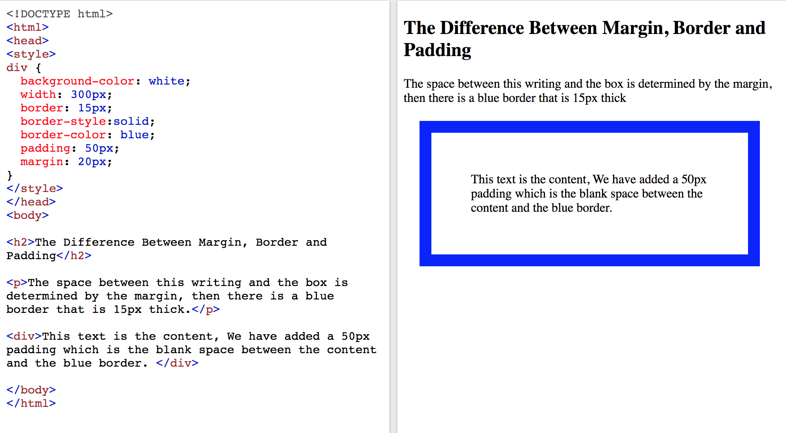
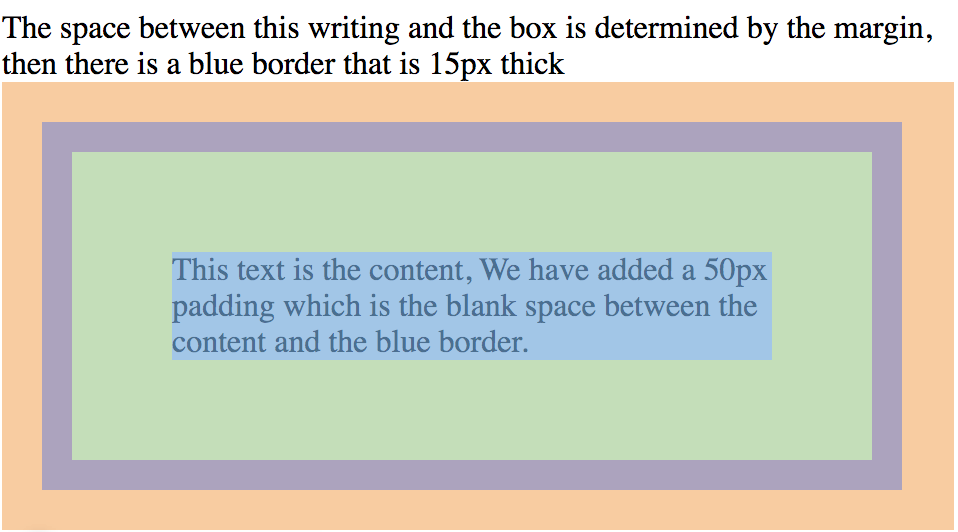
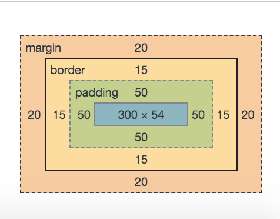

✶
The Difference Between Margins, Borders and Padding
Here we can see that the margins, borders and padding are used to position elements relative to eachother and work with space.
The different colors represent the different elements of space
If we click into the inspect of any website page, we can see the dimensions of the margins, borders and padding used.